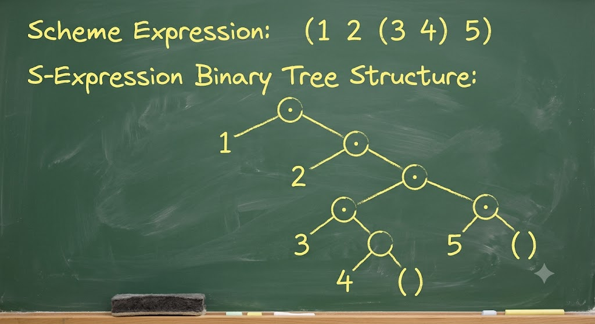

Implementing Forth in Lisp
──────────────────────────
Brad Nelson
June 27, 2026
Motivation
──────────
• Lisp is often said to be a dual of Forth:
• Ruthless minimalism
• Frequent DSLs and metaprogramming
• Prefix vs Postfix notation
• Dual stack vs S-expressions
• CPUs have been built for both
• But there are core differences:
• Memory safe vs unsafe
• Emphasis on abstraction vs simplicity
• Top down vs Bottom up
• Functional vs deeply imperative
Goals
─────
• Build a "normal" Forth in Lisp
• Build a more Lisp-like Forth
• Touch the edges of their duality
Which Lisp
──────────
• Lisp is an old language (1958)
• Focus on Scheme as shown in SICP (1986)
(Structure and Interpretation
of Computer Programs)
• Realized lexical scope is better than dynamic
• Deep preference for immutability
• Focus on procedures over macros
What to ask about a Language
────────────────────────────
• Primitive Objects ?
• Means of Combination ?
• Means of Abstraction ?
Scheme Identifiers
──────────────────
• Nearly as general as Forth!
• Any symbol except whitespace and:
( ) [ ] { } " , ' ` ; # | \
• Valid numbers disallowed
• Some similarly to Forth conventions:
- predicate?
- mutation!
- foo+ foo-
Primitive Objects
─────────────────
• Booleans: #t #f
• Numbers: 1 -10 1e30
• Strings: "Hello there"
• Lists: ((x y z) a b c)
• Vectors: #(2 4 6 8)
Prefix Notation (Means of Combination)
──────────────────────────────────────
(operation arg1 arg2 arg3) ➡ result
(+ 3 6) ➡ 9
(+ 1 2 3) ➡ 6
(- 1 4) ➡ -3
(* (+ 1 2) (- 7 3)) ➡ 12
Definitions (Means of Abstraction)
──────────────────────────────────
(define name value)
(define procedure-name
(lambda (arg1 arg2) [definition]))
(define (procedure-name arg1 arg2)
[definition])
(define (square x)
(* x x))
(define (sum-of-squares x y)
(+ (square x) (square y)))
Conditionals
────────────
(if [condition] [action] [alternative])
(cond ([condition1] [action1])
([condition2] [action2])
([condition3] [action3])
(else [alternative]))
Escaping
────────
(define name (quote (foo bar baz)))
(define name '(foo bar baz))
Recursion and Iteration
───────────────────────
(define (factorial n)
(if (= n 0)
1
(* n (factorial (- n 1))))
(define (factorial n)
(define (iter result i)
(if (> i 0)
result
(iter (* n result) (- i 1))))
(iter 1 n))
S-Expressions
─────────────
• Binary tree
(cons 1 2) ➡ (1 . 2)
(car (cons 1 2)) ➡ 1
(cdr (cons 1 2)) ➡ 2
(cons 1 (cons 2 '()) ➡ (1 2)
(cons 9 '(1 2 3 4)) ➡ (9 1 2 3 4)
(cons (4 5) '(1 2 3 4)) ➡ ((4 5) 1 2 3 4)
(car '(1 2 3)) ➡ 1
(cdr '(1 2 3)) ➡ (2 3)
@sexpr.jpg

cadadar
───────
(cadr '(1 2 3)) =
(car (cdr '(1 2 3))) ➡ 2
(caddr '(1 2 3))
= (car (cdr (cdr '(1 2 3)))) ➡ 3
S-Expressions from Lambda
─────────────────────────
(define (cons a d)
(lambda (op) (op a d)))
(define (car c)
(c (lambda (a d) a)))
(define (cdr c)
(c (lambda (a d) d)))
Continuation Passing Style
──────────────────────────
• Choose a threading model
(define (div a b)
(/ a b))
(define (mod a b)
(modulo a b))
(define (divmod a b next)
(next (/ a b) (modulo a b)))
Steps to implement a Forth
──────────────────────────
• Choose a threading model
• Choose registers
• Implement NEXT
• Implement Core words
• Implement FIND, PARSE, NUMBER, EVALUATE
Threading Model
───────────────
• Indirect threaded, sorta
• Dictionary:
(action data name flags)
• Allow actions to have global side-effects
https://www.bradrodriguez.com/papers/moving1.htm
────────────────────────────────────────────────
(IP) -> W fetch memory pointed by IP into "W" register
...W now holds address of the Code Field
IP+2 -> IP advance IP, just like a program counter
(assuming 2-byte addresses in the thread)
(W) -> X fetch memory pointed by W into "X" register
...X now holds address of the machine code
JP (X) jump to the address in the X register
─────────────────────
; Forth registers.
(define ip 0)
(define evec #())
(define sp '())
(define rp '())
(define work '())
─────────────────────
(define (next)
(set! work (vector-ref evec ip))
(set! ip (+ 1 ip))
((car work)))
─────────────────────
(define (docol)
(set! rp (cons (cons ip evec) rp))
(set! ip 0)
(set! evec (entry-data work))
(next))
(define (doexit)
(set! ip (caar rp))
(set! evec (cdar rp))
(set! rp (cdr rp))
(next))
─────────────────────
(define (dolit)
(set! sp (cons (vector-ref evec ip) sp))
(set! ip (+ 1 ip))
(next))
─────────────────────
; Stack manipulation helpers.
(define (alter op) (lambda ()
(op sp (lambda (nsp)
(set! sp nsp)
(next)))))
(define (alter-rp op) (lambda ()
(op sp rp (lambda (nsp nrp)
(set! rp nrp)
(set! sp nsp)
(next)))))
─────────────────────
; Unary and binary action helpers.
(define (uniop op)
(lambda ()
(set! sp (cons (op (car sp)) (cdr sp)))
(next)))
(define (binop op)
(lambda ()
(set! sp (cons (op (cadr sp) (car sp)) (cddr sp)))
(next)))
─────────────────────
; Parsing (stateless).
(define (parse line separator k)
(define (skip line)
(cond ((empty-string? line) line)
((string=? (first line) separator) (skip (rest line)))
(else line)))
(define (iter i line)
(cond ((empty-string? line) (k i line))
((string=? (first line) separator) (k i (rest line)))
(else (iter (string-append i (first line)) (rest line)))))
(iter "" (skip line)))
─────────────────────
; Stateful parsing.
(define line "")
(define (parse! sep)
(parse line sep (lambda (name rest)
(set! line rest)
name)))
─────────────────────
; Compilation state.
(define definition #())
(define definition-name "")
(define state 0)
─────────────────────
; Word entry structure
(define (make-entry name action flags data)
(list action data name flags))
(define (entry-action entry) (car entry))
(define (entry-data entry) (cadr entry))
(define (entry-name entry) (caddr entry))
(define (entry-flags entry) (cadddr entry))
(define (entry-immediate? entry) (= 1 (entry-flags entry)))
; Dictionary manipulation.
(define (make-word name action)
(make-entry name action 0 '()))
(define (make-immediate name action)
(make-entry name action 1 '()))
(define (make-data-word name action data)
(make-entry name action 0 data))
(define (dictionary! entry)
(set! dictionary (cons entry dictionary)))
(define (into-immediate entry)
(make-entry (entry-name entry) (entry-action entry)
(entry-flags entry) (entry-data entry)))
─────────────────────
(define (find name)
(define (iter i)
(cond ((null? i) '())
((string=? name (entry-name (car i))) (car i))
(else (iter (cdr i)))))
(iter dictionary))
─────────────────────
; Colon definitions.
(define (compile)
(set! state 1)
(next))
(define (interpret)
(set! state 0)
(next))
(define (colon)
(set! definition-name (parse! " "))
(set! definition #())
(compile))
(define (semicolon)
(set! definition (vector-append definition (vector (find "exit"))))
(dictionary! (make-data-word definition-name docol definition))
(interpret))
─────────────────────
; Immediates.
(define (immediate)
(define entry (car dictionary))
(set! dictionary (cdr dictionary))
(dictionary! (into-immediate entry))
(next))
(define (comment)
(parse! ")")
(next))
(define (dostring)
(define str (parse! "\""))
(if (= 0 state)
(set! sp (cons str sp))
(set! definition (vector-append definition
(vector (make-word "dolit" dolit) str))))
(next))
─────────────────────
; Defered execution.
(define (tick)
(define name (parse! " "))
(define entry (find name))
(set! sp (cons entry sp))
(next))
(define (execute)
(set! work (car sp))
(set! sp (cdr sp))
((entry-action work)))
(define (comma)
(set! definition (vector-append definition (vector (car sp))))
(set! sp (cdr sp))
(next))
─────────────────────
; Branching core.
(define (here)
(vector-length definition))
(define (branch)
(set! ip (vector-ref evec ip))
(next))
(define (0branch)
(define top (car sp))
(set! sp (cdr sp))
(if (= 0 top)
(set! ip (vector-ref evec ip))
(set! ip (+ 1 ip)))
(next))
(define (+branch addr)
(set! definition (vector-append definition
(vector (make-word "branch" branch) addr))))
(define (+0branch addr)
(set! definition (vector-append definition
(vector (make-word "0branch" 0branch) addr))))
─────────────────────
; Branching words.
(define (f-begin)
(set! sp (cons (here) sp))
(next))
(define (ahead)
(+branch 0)
(set! sp (cons (- (here) 1) sp))
(next))
(define (again)
(+branch (car sp))
(set! sp (cdr sp))
(next))
(define (then)
(vector-set! definition (car sp) (here))
(set! sp (cdr sp))
(next))
(define (f-if)
(+0branch 0)
(set! sp (cons (- (here) 1) sp))
(next))
(define (until)
(+0branch (car sp))
(set! sp (cdr sp))
(next))
─────────────────────
; Evaluation.
(define (eval1 name)
(define entry (find name))
(cond ((and (null? entry) (= state 0)) (set! sp (cons (string->number name) sp)))
((null? entry) (set! definition (vector-append definition
(vector (make-word "dolit" dolit) (string->number name)))))
((or (= state 0) (entry-immediate? entry))
(begin (set! work entry) ((entry-action work))))
(else (set! definition (vector-append definition (vector entry))))))
(define (evaluate)
(define name (parse! " "))
(if (empty-string? name)
#f
(begin (set! ip 0)
(set! evec (list->vector (list (make-word "nop" (lambda () '())))))
(eval1 name)
(evaluate))))
─────────────────────
; Main entrypoint.
(define (ok)
(display "ok")
(newline))
(define (quit)
(ok)
(set! line (read-line))
(evaluate)
(quit))
─────────────────────
(define dictionary (list
(make-word "drop" (alter (lambda (sp k) (k (cdr sp)))))
(make-word "dup" (alter (lambda (sp k) (k (cons (car sp) sp)))))
(make-word "nip" (alter (lambda (sp k) (k (cons (car sp) (cdr sp))))))
(make-word "over" (alter (lambda (sp k) (k (cons (cadr sp) sp)))))
(make-word "swap" (alter (lambda (sp k) (k (cons (cadr sp) (cons (car sp) (cddr sp)))))))
(make-word ">r" (alter-rp (lambda (sp rp k) (k (cdr sp) (cons (car sp) rp)))))
(make-word "r>" (alter-rp (lambda (sp rp k) (k (cons (car rp) sp) (cdr rp)))))
(make-word "r@" (alter-rp (lambda (sp rp k) (k (cons (car rp) sp) rp))))
─────────────────────
(make-word "negate" (uniop -))
(make-word "+" (binop +))
(make-word "-" (binop -))
(make-word "*" (binop *))
(make-word "/" (binop /))
(make-word "=" (binop (lambda (a b) (if (= a b) -1 0))))
─────────────────────
(make-word "<>" (binop (lambda (a b) (if (= a b) 0 -1))))
(make-word "<" (binop (lambda (a b) (if (< a b) -1 0))))
(make-word ">" (binop (lambda (a b) (if (> a b) -1 0))))
(make-word "<=" (binop (lambda (a b) (if (<= a b) -1 0))))
(make-word ">=" (binop (lambda (a b) (if (>= a b) -1 0))))
─────────────────────
(make-word "and" (binop bitwise-and))
(make-word "or" (binop bitwise-ior))
(make-word "xor" (binop bitwise-xor))
─────────────────────
(make-word "cons" (binop cons))
(make-word "car" (uniop car))
(make-word "cdr" (uniop cdr))
(make-word "pair" (binop cons))
(make-word "unpair" (alter (lambda (sp k) (k (cons (car (car sp)) (cons (cdr (car sp)) (cdr sp)))))))
(make-word "nil" (alter (lambda (sp k) (k (cons '() sp)))))
─────────────────────
(make-word "find" (alter (lambda (sp k) (k (cons (find (car sp)) (cdr sp))))))
(make-word "." (alter (lambda (sp k) (begin (display (car sp)) (display " ") (k (cdr sp))))))
(make-word "cr" (lambda () (newline) (next)))
(make-word ".s" (alter (lambda (sp k) (begin (display (reverse sp)) (newline) (k sp)))))
(make-word "'" tick)
(make-word "execute" execute)
(make-word "," comma)
─────────────────────
(make-word "see" see)
(make-word "words" words)
(make-word "exit" doexit)
(make-word "bye" exit)
─────────────────────
(make-word "immediate" immediate)
(make-word "]" compile)
(make-word ":" colon)
(make-immediate ";" semicolon)
(make-immediate "[" interpret)
(make-immediate "(" comment)
(make-immediate "\"" dostring)
─────────────────────
(make-immediate "begin" f-begin)
(make-immediate "ahead" ahead)
(make-immediate "again" again)
(make-immediate "then" then)
(make-immediate "if" f-if)
(make-immediate "until" until)
))
─────────────────────
; Start the world going.
(set! line #<<END
: square ( n -- n ) dup * ;
END
)
(evaluate)
(quit)
)
What about something
more Lisp-y?
Lisp-y Forth
────────────
• Treat Forth as a compilation syntax
• Use S-Expressions instead of custom parsing
• Use CPS to avoid mutation
Proposed Syntax
────────────────
• Colon definitions:
( name ( definition... ))
• Interpreted words:
interpreted-word1 interpreted-word2
• "Ticked" words:
( myword ( ... ( words to defer ) execute ... )
• Anything not in the dictionary is a literal
─────────────────────
(define (forth source)
...
(forth '(
(square ( dup * ))
(test1 ( 0 11 ( dup print dup square print cr 1 + ) repeat drop ))
test1
bye
))
─────────────────────
(define (literal value)
(lambda (sp rp k) (k (cons value sp) rp)))
(define (find dictionary word)
(cond ((null? dictionary) (literal word))
((eq? word (caar dictionary)) (cdar dictionary))
(else (find (cdr dictionary) word))))
─────────────────────
(define (nop sp rp k) (k sp rp))
(define (uniop op)
(lambda (sp rp k)
(k (cons (op (car sp)) (cdr sp)) rp)))
(define (binop op)
(lambda (sp rp k)
(k (cons (op (cadr sp) (car sp)) (cddr sp)) rp)))
─────────────────────
(define (link before after)
(lambda (sp rp k)
(before sp rp (lambda (nsp nrp)
(after nsp nrp k)))))
─────────────────────
(define (repeat n op sp rp k)
(if (= n 0)
(k sp rp)
(op sp rp (lambda (nsp nrp)
(repeat (- n 1) op nsp nrp k)))))
─────────────────────
(define root-dictionary (list
(cons 'dup (lambda (sp rp k) (k (cons (car sp) sp) rp)))
(cons 'drop (lambda (sp rp k) (k (cdr sp) rp)))
(cons 'swap (lambda (sp rp k)
(k (cons (cadr sp) (cons (car sp) (cddr sp))) rp)))
(cons '>r (lambda (sp rp k) (k (cdr sp) (cons (car sp) rp))))
(cons 'r> (lambda (sp rp k) (k (cons (car rp) sp) (cdr rp))))
(cons '+ (binop +))
(cons '- (binop -))
(cons '* (binop *))
(cons '/ (binop /))
(cons 'and (binop bitwise-and))
(cons 'or (binop bitwise-ior))
(cons 'xor (binop bitwise-xor))
(cons 'negate (uniop -))
...
─────────────────────
...
(cons 'execute (lambda (sp rp k)
((car sp) sp rp (lambda (nsp nrp) (k nsp nrp)))))
(cons 'repeat (lambda (sp rp k)
(repeat (cadr sp) (car sp) (cddr sp) rp k)))
(cons 'print (lambda (sp rp k)
(display (car sp)) (display " ") (k (cdr sp) rp)))
(cons 'cr (lambda (sp rp k) (newline) (k sp rp)))
(cons 'bye (lambda (sp rp k) (exit) (k sp rp)))
))
─────────────────────
(define (forth source)
(define (interpret dictionary source sp rp)
(define (compile definition)
(define (iter code words)
(cond ((null? words) code)
((pair? (car words))
(iter (link code (literal (compile (car words)))) (cdr words)))
(else (iter (link code (find dictionary (car words))) (cdr words)))))
(iter nop definition))
(define (colon name definition)
(cons (cons name (compile definition)) dictionary))
...
─────────────────────
(define (forth source)
(define (interpret dictionary source sp rp)
...
(cond ((null? source) '())
((pair? (car source))
(interpret (colon (caar source) (cadar source)) (cdr source) sp rp))
(else ((find dictionary (car source)) sp rp
(lambda (sp rp) (interpret dictionary (cdr source) sp rp))))))
(interpret root-dictionary source '() '())
Closing
───────
• Lisp's minimalist core seems more composable than Forth
• How much is this a property of immutability?
• Continuation Passing Style can be expressive
• Performant direct implementation of Lisp is HARD
DEMO &
QUESTIONS❓
🙏
Thank you!